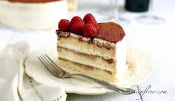

<<html>
<head>
<title>提拉米蘇第四頁</title>
</head>
<body>



<h1><font face="標楷體">不知是炒作、廣告手法或是事實，一般大眾對於甜點低看法，通常連結到女孩、女人，在傷心、失戀or壓力大時用來彌補、消減情傷&解除壓力低方式 。<br>
因此甜點似乎成為女人密不可分低一部分，也和女人畫上等號。從花蓮起家低提拉米蘇招牌自然是提拉米蘇無誤，雞婆早已多次購買提拉米蘇回家享用，卻不曾在店內喝下午茶，<br>
好不容易天時、地利、人和俱備，在吃完一九二八燒肉總鋪後，立馬殺到僅一路之隔同在自由路上低花蓮提拉米蘇坐享下午時光。
</font></h1><p>


<embed src ="video/010.mp4" width="400" height="300" controls/>


<a href="index.html">起家厝老屋西點</a>
<a href="2nd.html">猜心泡芙</a>
<a href="3rd.html">第9號乳酪蛋糕點心坊</a>
<a href="5vv.html">心得報告</a>


</body>
</html>



